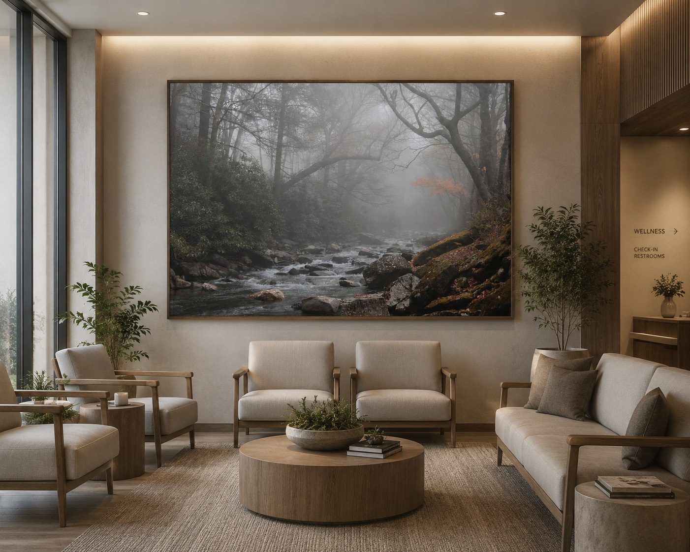
Waiting Room
Fog and Water Stillness
A quiet river scene becomes a strong wellness waiting room anchor without feeling corporate or sterile.
Healthcare & Wellness Artwork
Atmospheric landscape photography by Dan Sproul, curated for healthcare waiting rooms, patient rooms, rehabilitation corridors, therapy offices, wellness centers, senior living lounges, oncology environments, and commercial interiors that need visual calm.
Healthcare Artwork Guide
Healthcare interiors need artwork that feels intentional without creating visual stress. Quiet landscape photography, reflective water, soft mountain forms, fog, forests, and gentle natural movement can help a space feel calmer, warmer, and more considered.
This healthcare artwork guide brings together room mockups, practical sizing guidance, and curated nature photography selected for patient-facing interiors, wellness spaces, corridors, and restorative commercial environments.
Dan’s note: I’ve always been drawn to quieter landscapes — fog, water movement, winter forests, muted coastlines, and low-distraction natural scenes. Over time I noticed these images naturally fit healthcare and wellness interiors where the goal is calm rather than stimulation. The work here is not meant to feel like decorative filler; it is meant to help a room breathe.
Choose by Space
Browse by the healthcare environment you are planning, then use the examples below for scale, mood, and placement direction.
Artwork in Healthcare Spaces
Click any mockup to enlarge the room view. Available artwork links open separately so the page remains easy to browse.
Waiting Rooms & Wellness Lobbies
Waiting rooms need artwork that softens the clinical experience while still feeling professional, warm, and intentional.

A quiet river scene becomes a strong wellness waiting room anchor without feeling corporate or sterile.
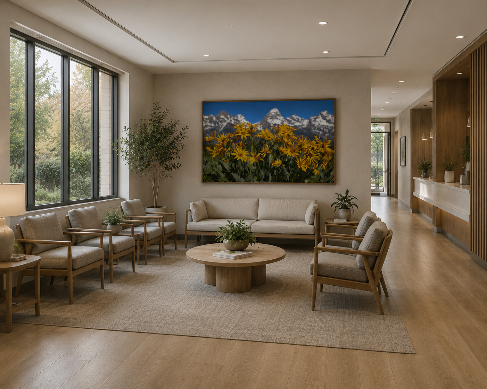
Warm floral foreground and mountain forms create an optimistic waiting room tone while remaining natural and calm.

A quiet black-and-white landscape gives the waiting area structure and calm without adding strong color or visual clutter.

Waterfall imagery adds natural movement and a restorative focal point for wellness clinics and patient-facing lounge spaces.
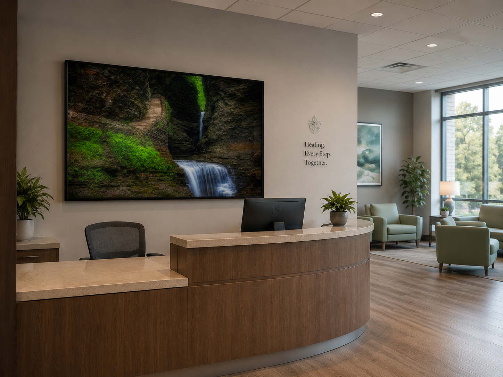
A moody coastal landscape creates a calm arrival moment for restorative health, wellness, or hospitality-inspired care settings.
Patient Rooms
Patient rooms usually benefit from simpler compositions, softer contrast, quieter horizons, and nature images that do not demand too much attention.
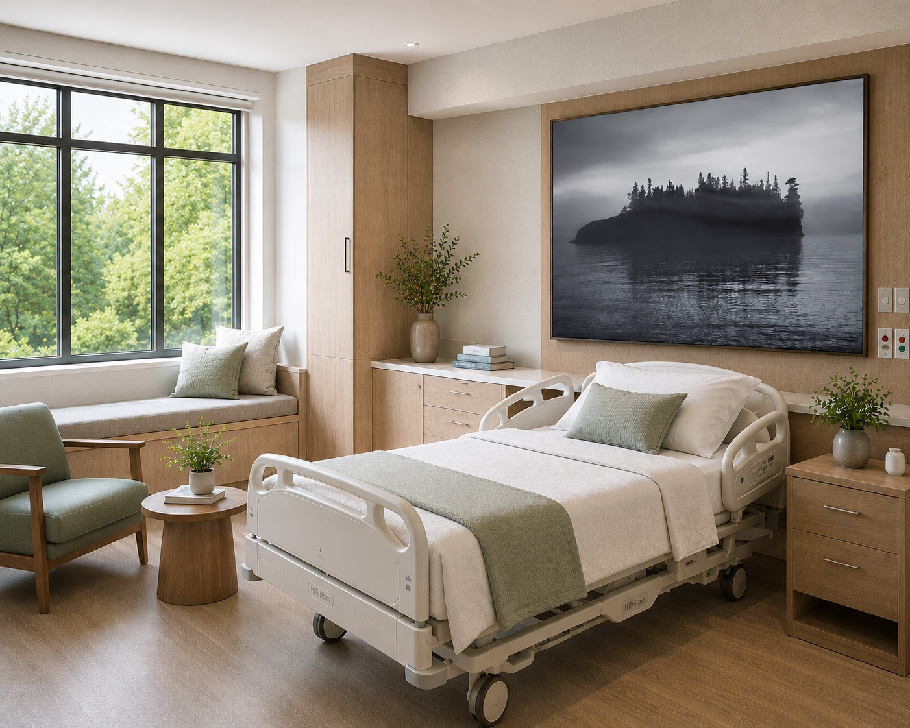
A foggy island scene gives the patient room a quiet focal point without adding visual clutter or harsh color.
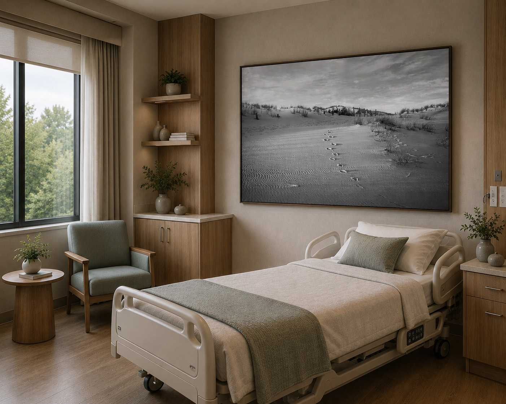
Monochrome dune tracks create a quiet directional image, ideal for patient rooms where calm and simplicity matter.

A lake and dock image brings soft blue tones and visual quiet into a modern patient room.
Corridors & Transition Spaces
Corridors can support more scale and stronger landscape rhythm, especially when the image creates calm direction through the space.
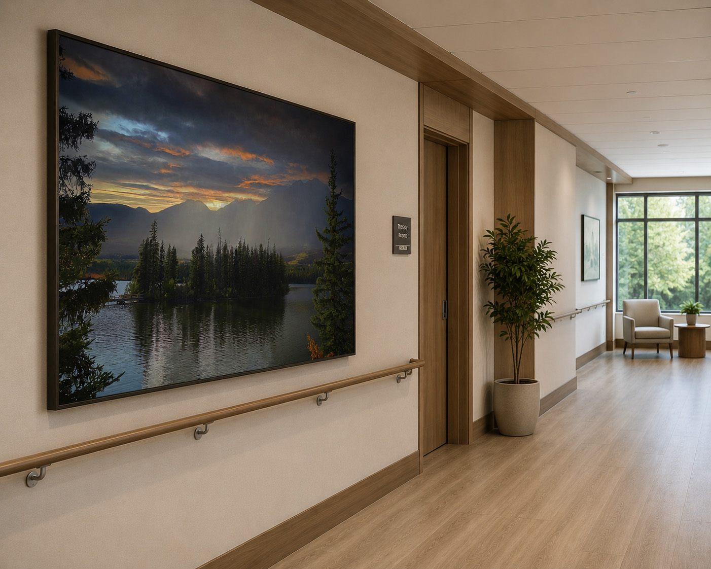
A large atmospheric lake and mountain scene adds depth and orientation to a transitional healthcare corridor.
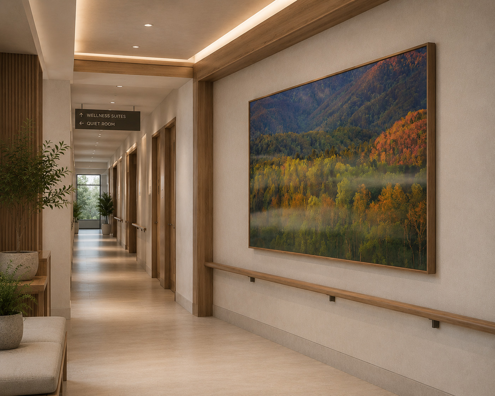
Autumn color can add gentle warmth to wellness corridors when balanced with natural wood and neutral finishes.

A large waterfall landscape softens a healthcare corridor and creates a restorative visual pause near waiting or transition zones.

Monochrome mountain and lake photography gives a corridor structure, depth, and a refined low-distraction atmosphere.
.jpg)
A foggy river landscape supports a calm hallway experience with soft movement and natural depth.
Therapy & Consultation Offices
Therapy and consultation spaces often work best with nature imagery that feels grounded, organic, and private rather than dramatic.
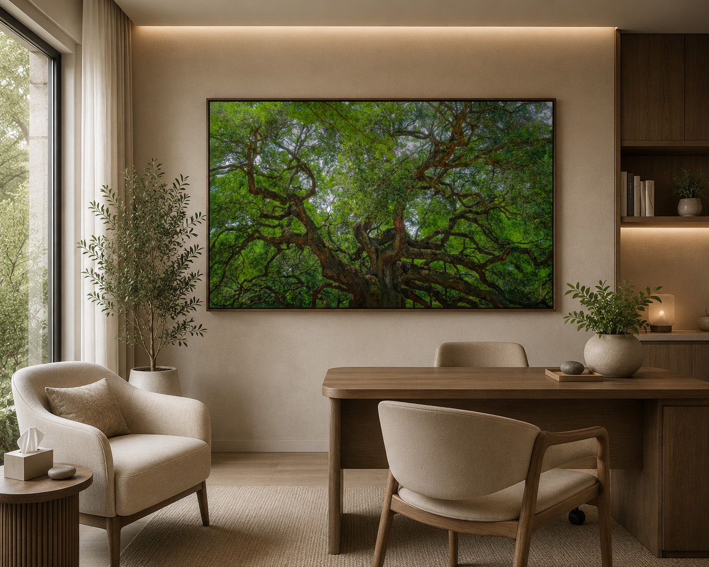
A green canopy scene supports a softer consultation atmosphere and brings organic texture into private care spaces.
Senior Living & Assisted Living Artwork
Senior living belongs on this healthcare hub, but it should also stand on its own. These spaces bridge healthcare, hospitality, wellness, and residential design, so the artwork needs to feel comforting rather than clinical.
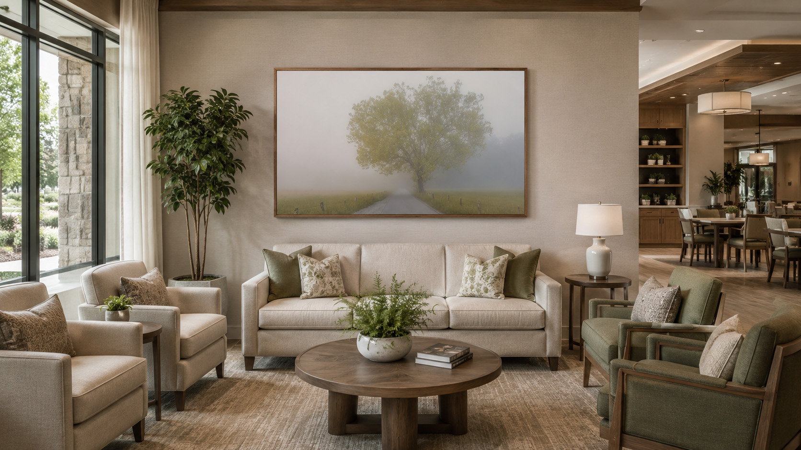
A peaceful fog-covered country lane creates a warm residential feeling for senior living communities, family spaces, and memory care environments.
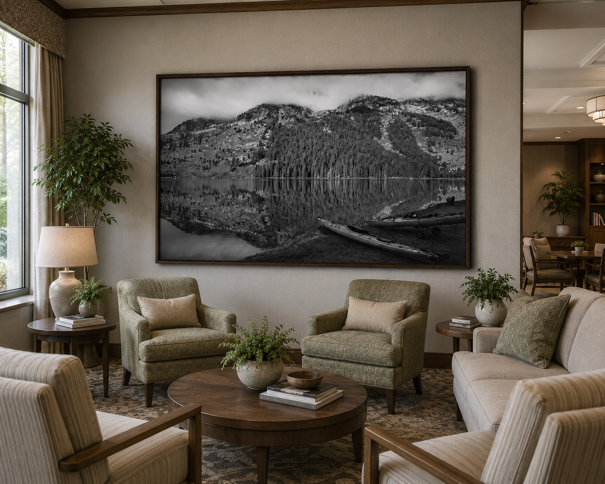
A monochrome mountain reflection provides a premium, familiar, and peaceful statement piece for senior living lounges.

A large black-and-white landscape creates a premium but restrained focal point for family waiting, assisted living lounges, and shared restorative rooms.
Dedicated Senior Living Page
Senior living communities often need a different artwork language than hospitals: warmer, more familiar, more residential, and more connected to everyday comfort.
Warm landscapes, quiet paths, forests, reflections, and familiar natural imagery for shared gathering spaces.
Nature imagery can create visual landmarks, reduce repetition, and make transition spaces feel more human.
Color, warmth, water, and seasonal imagery can help daily gathering spaces feel more inviting.
Oncology & Specialized Care
A focused healthcare pathway for infusion bays, oncology waiting areas, treatment corridors, and patient-centered environments where visual calm is especially important.

Calming landscape photography for infusion bays, oncology waiting rooms, treatment corridors, and patient-centered healthcare interiors.
Room-by-Room Guidance
Waiting areas need artwork that can soften the first impression of a healthcare space. Patient rooms usually benefit from lower contrast, simpler compositions, and imagery that gives the eye somewhere calm to rest.
Therapy offices and consultation rooms often work best with biophilic imagery — trees, fog, water, and soft green tones — while corridors can handle larger, more atmospheric horizontal pieces that create rhythm along a long wall.
Use larger horizontal landscapes, foggy rivers, quiet mountains, and soft water movement. 40x60 or larger often works well.
Use low-distraction imagery, softer monochrome, quiet shorelines, dunes, muted skies, and reflective water. 30x40 is often a strong starting point.
Use long-format landscapes, forest paths, mountain reflections, and larger pieces that help create a calm visual rhythm.
Use forest canopy, fog, greenery, and contemplative water scenes to create privacy, decompression, and natural warmth.
Healthcare Specification Resource
A concise, designer-facing PDF for healthcare, wellness, and patient-centered interiors. It includes room-by-room artwork guidance, visual mockup examples, recommended formats, and project support details for waiting rooms, patient rooms, corridors, consultation spaces, and wellness clinics.
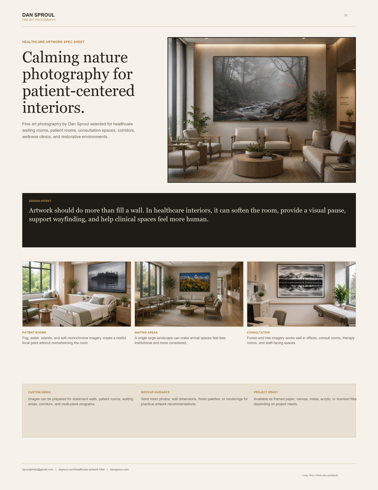
Procurement & Installation Support
Selecting artwork for healthcare environments involves more than choosing images. Designers, facilities teams, and project managers often need guidance on sizing, room-to-room consistency, print formats, project logistics, and long-term durability.
Dan Sproul works with designers, healthcare facilities, wellness centers, senior living communities, and commercial projects to help create cohesive artwork programs that support the atmosphere and function of each space.
Many of these same artwork considerations apply to assisted living, memory care, independent living, and active adult communities. Explore the dedicated Senior Living Artwork page for examples organized around resident lounges, dining spaces, memory care environments, and wellness-focused community spaces.
Artwork can be specified for waiting rooms, patient rooms, corridors, wellness spaces, family lounges, and large-scale feature walls.
Framed fine art paper for residential-feel healthcare spaces, acrylic and metal for contemporary or high-traffic environments, and canvas for warmer wellness settings.
Artwork can be curated as coordinated series across corridors, waiting rooms, family lounges, patient areas, and wellness environments.
Direct-to-project shipping available. Artwork is compatible with professional commercial framing and installation services.
Select imagery may be available for digital licensing, large-format production, and project-specific applications.
Room photographs, wall dimensions, and project goals can be reviewed to help identify artwork that best supports the intended atmosphere.
Curated Purchase Gallery
This curated gallery gives designers and healthcare buyers a smaller, calmer starting point instead of sending them into the full catalog.
Patient Room Calm
Minimal black-and-white dune photography with open space and low visual noise.
Best for: patient rooms, consultation spaces
View print options →
Corridor Statement
Quiet monochrome mountain reflection suited for larger corridors and executive spaces.
Best for: corridors, lounges, offices
View print options →Waiting Room Softness
Soft fog and open field space for patient-facing healthcare and wellness interiors.
Best for: waiting rooms, therapy suites
View print options →Wellness Water
Layered waterfall movement and deep green forest tones for restorative spaces.
Best for: wellness centers, waiting rooms
View print options →Healthcare Artwork FAQ
Yes. Send a room photo, wall size, or project type and I can suggest artwork direction based on scale, mood, and environment.
Calm water, soft forests, quiet mountains, fog, open skies, and low visual-noise compositions often work best.
Most artwork can be ordered in standard or custom sizes depending on wall scale, room function, and final print format.
Yes. Send a room photo or project direction and Dan can recommend artwork and provide guidance for placement, scale, and mood.
Yes. Artwork can be curated as a cohesive collection across waiting rooms, corridors, patient rooms, wellness spaces, family lounges, and other healthcare environments.